9. The Nature and Evolution of Habitability#
Jun 01, 2026 | 11792 words | 59 min read
How to use this chapter
This chapter is about habitability as a changing planetary condition. Focus on three questions as you read: why the habitable zone is useful but incomplete, why Venus and Earth followed different climate histories, and why a planet’s atmosphere, geology, water inventory, and host star must be studied together.
Earth is the only confirmed inhabited world, but it is not the only world that teaches us about habitability. Mars shows that a planet can once have liquid water and then lose the surface conditions that made that water possible. Europa and other icy moons show that liquid water can exist far from the Sun when internal heat replaces sunlight as the main energy source. Venus shows a different and more severe lesson: two rocky planets can begin with broadly similar sizes and materials, yet end with radically different surface environments.
In this chapter, the word habitable means that an environment could support life as we know it. It does not mean life is present. That distinction matters because the search for life in the universe is not a search for places that merely look pleasant from a distance. It is a search for physical, chemical, and geological systems that can supply liquid media, useful energy, and the raw materials needed for life. The habitable zone is one of the simplest tools for starting that search, but Venus reminds us that location alone is not destiny.
We will use Venus as the central comparison case. Venus receives almost twice as much sunlight as Earth today, has a much more massive carbon dioxide atmosphere, and appears to have a very different interior and surface-atmosphere history. Those differences matter more than the cartoon version of the story in which Venus is simply “Earth, but closer to the Sun.” A useful model of habitability has to couple sunlight, atmosphere, water, rocks, volcanic outgassing, atmospheric escape, and long-term climate regulation.
This chapter also emphasizes timescale. A planet can be in a promising location for a short time and still fail to remain habitable long enough for life to appear, spread, or change the planet in detectable ways. A world can also begin outside a simple surface-water zone and still host protected liquid environments below the surface. Habitability is therefore not a label we attach once and keep forever. It is a history of energy flow, matter cycling, and environmental stability.
The examples in this chapter will often sound like comparisons between Venus and Earth, but the deeper goal is broader. Venus asks how a rocky planet loses water. Earth asks how a rocky planet keeps water. Mars asks how a rocky planet can lose atmosphere and surface habitability as it cools. Icy moons ask how liquid water can survive when sunlight is weak. Exoplanets will ask the same questions with much less direct information. The habitability problem is difficult because every world is a system, and systems can follow different paths even when their starting materials look similar.
For background, this chapter builds on earlier discussions of the structure of the Solar System, Earth’s geology and climate regulation, the climate history of Mars, and subsurface habitability on Jovian moons.
9.1. The Concept of a Habitable Zone#
The habitable zone is one of the most useful ideas in astrobiology because it converts a difficult question into a first-pass search strategy. The difficult question is: Which worlds could support life? The first-pass version is narrower: Which rocky worlds receive the right amount of starlight for liquid water to exist on the surface, assuming a roughly Earthlike atmosphere?
That narrower question is not the whole story, but it is a good place to start. Surface liquid water is easy to motivate because all life on Earth uses liquid water as a reaction medium. It dissolves molecules, transports nutrients and waste, allows reactions to occur, and remains liquid across a temperature range that overlaps common planetary surface conditions. A world with stable surface liquid water is not automatically inhabited, but it is a stronger target than a world whose surface water must instantly freeze, boil, or escape into space.
The phrase as we know it is doing important work here. Astrobiology does not claim that all possible life must be identical to Earth life. It begins with Earth life because Earth is the one example we can study in detail. If we want a search strategy that can be tested with telescopes and spacecraft, we should start with environments that use chemistry known to support living systems. That is why liquid water receives so much attention. It is not a sentimental preference for Earth; it is an evidence-based starting point.
The habitable zone also assumes a planet that is at least broadly Earthlike. That does not mean an exact copy of Earth. It means a rocky world with a solid surface, enough gravity to hold an atmosphere, enough pressure for surface liquid water, and an atmosphere that is not wildly different from the kinds of atmospheres that climate models are built to handle. This is why the Moon is a useful cautionary example. The Moon is almost the same distance from the Sun as Earth, but it is not habitable at the surface. It is too small to hold a substantial atmosphere, so liquid water is not stable on its surface. The Sun-Moon distance alone is not enough.
9.1.1. Location, luminosity, and the first search box#
A planet’s distance from its host star strongly controls how much stellar energy reaches the planet. The same luminosity is spread over a larger sphere at larger distances, so the energy received per square meter drops with the square of distance. A planet twice as far from a star receives only one-fourth as much stellar energy. A planet half as far receives four times as much.
This inverse-square rule gives the habitable zone its basic shape. It is also why small changes in orbital distance can matter. Venus is not twice as close to the Sun as Earth, but moving from \(1.00\ {\rm AU}\) to \(0.72\ {\rm AU}\) still nearly doubles the sunlight received per square meter. Mars is not twice as far from the Sun as Earth, but at \(1.52\ {\rm AU}\) it receives less than half Earth’s sunlight. These differences are large enough to change the role an atmosphere must play.
Luminosity is the other half of the same calculation. A planet at \(1\ {\rm AU}\) around a star twice as luminous as the Sun receives twice as much energy as Earth receives from the Sun. A planet at \(1\ {\rm AU}\) around a star half as luminous receives half as much. This means there is no universal distance called “the habitable zone.” Each star has its own range, and that range changes as the star evolves.
This is why the habitable zone is normally drawn as a ring around a star. Close to the star, sunlight is intense enough that water tends to vaporize and the atmosphere can become wet and unstable. Far from the star, sunlight is weak enough that surface water tends to freeze unless the atmosphere supplies enough greenhouse warming. Between these extremes lies a range where surface liquid water could be stable, provided the planet has the right kind of atmosphere.

Fig. 9.1 The traditional habitable zone is a starting point: too close to the star favors water loss, too far favors freezing, and the middle range is where surface liquid water is easiest to imagine for an Earthlike planet. The green region is not a guarantee of life, and it is not even a guarantee of habitability, because a real planet also needs a suitable atmosphere, water inventory, and geologic history. Image credit: NASA Exoplanet Exploration Program, NASA media.#
A star’s brightness also matters. Hotter, brighter stars have habitable zones farther away and usually wider in absolute distance. Cooler, dimmer stars have habitable zones closer in. Because most stars are less massive and dimmer than the Sun, many habitable-zone planets found by transit surveys orbit close to their host stars. That helps detection because close-in planets orbit more often and transit more frequently, but it also creates challenges. Planets close to red dwarf stars may experience stronger flares, stronger particle environments, and tidal locking.
Stellar lifetime matters too. Massive, bright stars move through their lives quickly. Their habitable zones may be large and far out, but the star may not remain stable long enough for a slow biological history like Earth’s. Low-mass red dwarf stars can live far longer than the current age of the universe, but their habitable zones are close to the star. Close orbits can make planets easier to detect, yet they can also expose planets to stronger stellar activity and make tidal locking more likely. Habitability is therefore not just a question of where the orbit is. It is also a question of what kind of star the planet orbits and how that star changes with time.
This is one reason the habitable zone is so useful for mission design. Observers can estimate stellar luminosity, measure orbital periods, and infer orbital distances from transits or Doppler measurements. Those are among the easier pieces of information to obtain for distant exoplanets. We may not immediately know whether a planet has oceans or plate tectonics, but we can often know whether its orbit makes surface liquid water plausible enough to justify deeper study.
Checkpoint
Why does the habitable zone move outward around a brighter star, even if the planet itself has not changed?
The habitable zone is therefore best understood as a search box. It tells observers where to look first for surface-water worlds. It does not tell us whether the planet has an atmosphere, whether that atmosphere survived, whether the planet has oceans, whether the planet has a climate-regulating carbon cycle, or whether life ever began there.
Use this short NASA video as a visual anchor for the basic habitable-zone idea. Focus on the assumption being made: the zone is defined around surface liquid water, not around a complete theory of life or planetary evolution.
9.1.2. Why life could exist outside the classical habitable zone#
The habitable zone appears narrow if we define it only by surface liquid water. But several worlds already discussed in this course show why the definition is incomplete. Mars may still have protected subsurface environments. Europa, Ganymede, Callisto, Enceladus, and other icy bodies may have subsurface oceans maintained by tidal heating, radioactive decay, or antifreezes such as salts or ammonia. Titan has lakes and seas on its surface, but those liquids are methane and ethane rather than water.
These exceptions are not problems with the habitable zone. They are reminders that there are different kinds of habitability. A subsurface ocean does not need to sit at a special distance from the Sun because sunlight is not what keeps the ocean liquid. An ejected free-floating planet with a thick hydrogen atmosphere might retain internal heat even with no host star nearby. A Titan-like world could be interesting because it raises the possibility of non-water chemistry, even though that chemistry would be slower and more speculative than water-based life.
The same logic applies to subsurface groundwater on rocky planets. Mars is cold and dry at the surface today, but water may still exist as ice or brines below the surface. Such environments would not be surface habitable in the classical sense, and they would be hard to detect from far away. They still matter because life does not require a blue sky. It requires a suitable environment with liquid chemistry, usable energy, and materials that can be cycled into living systems.
Thick hydrogen atmospheres provide another exception. A rocky planet far outside the classical habitable zone could, in principle, retain enough internal heat if it had a dense hydrogen-rich atmosphere that slowed heat loss. This is not Earthlike surface habitability, and it would not be easy to recognize from a simple green-ring diagram. It shows why the phrase “outside the habitable zone” should not automatically mean “impossible for life.” It means the world would need a different heat source, different atmospheric physics, or a different liquid medium.
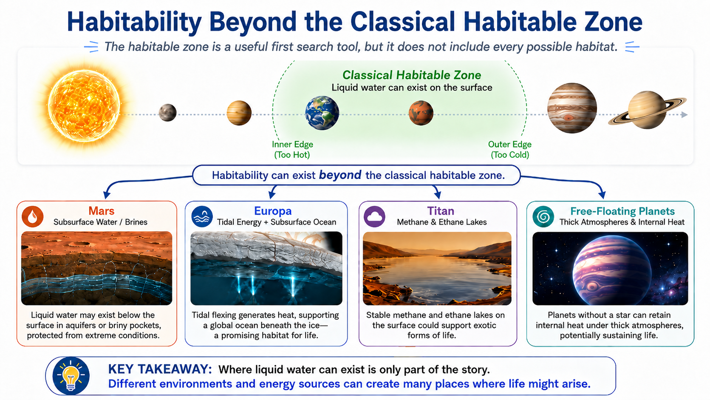
Fig. 9.2 The classical habitable zone is a useful first search tool, but it does not include every possible habitat. Mars may preserve subsurface water, Europa may have a tidally heated ocean, Titan has liquid methane and ethane on its surface, and free-floating planets could retain heat with thick atmospheres. These examples show why the habitable zone helps organize the search without ending the search. Image credit: Instructor-created course media.#
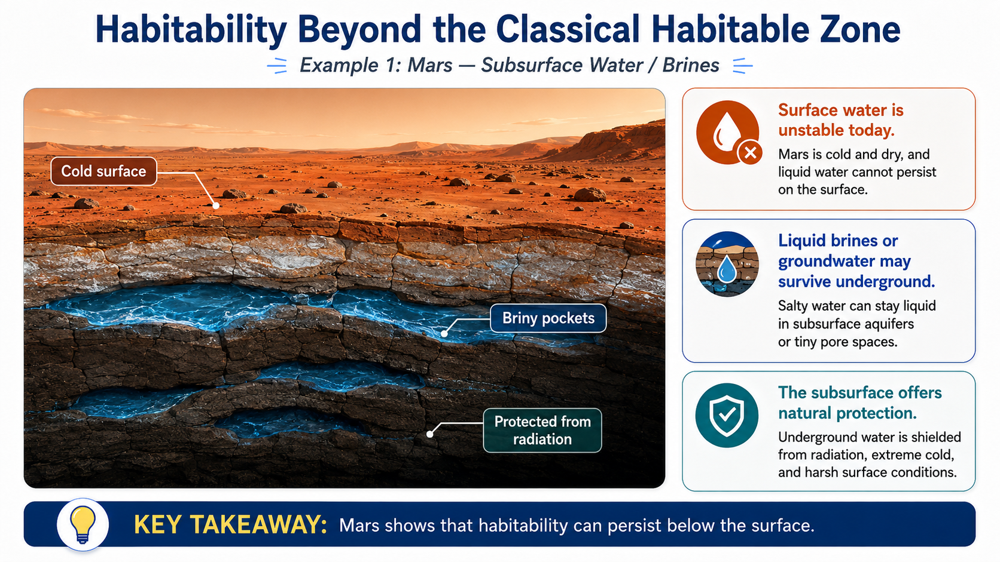
Fig. 9.3 Mars shows that habitability does not require stable surface oceans today. Although liquid water is unstable on the modern surface, briny water or groundwater may persist underground, where it can be shielded from radiation and harsh surface conditions. Image credit: Instructor-created course media.#
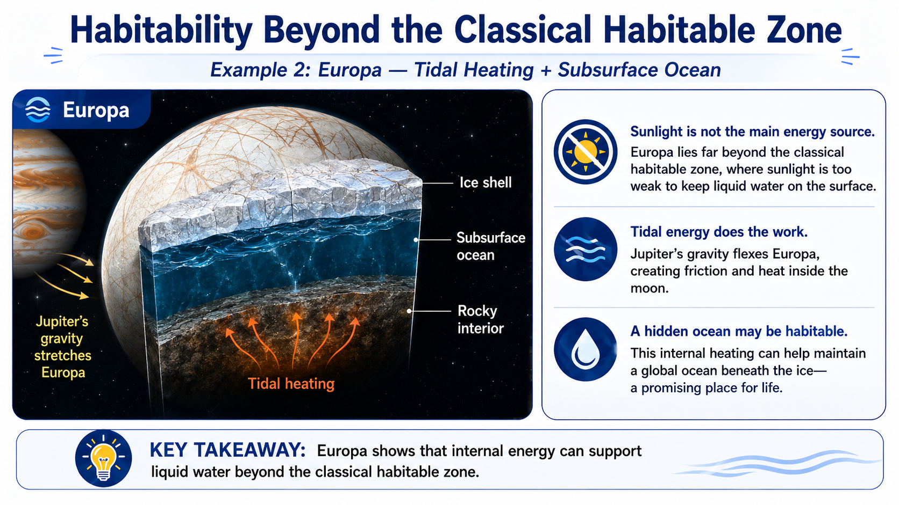
Fig. 9.4 Europa lies well outside the classical habitable zone, yet it remains one of the most promising habitats in the Solar System. Tidal heating from Jupiter can keep a global subsurface ocean liquid beneath the ice, showing that internal energy can sustain habitable environments far from strong sunlight. Image credit: Instructor-created course media.#
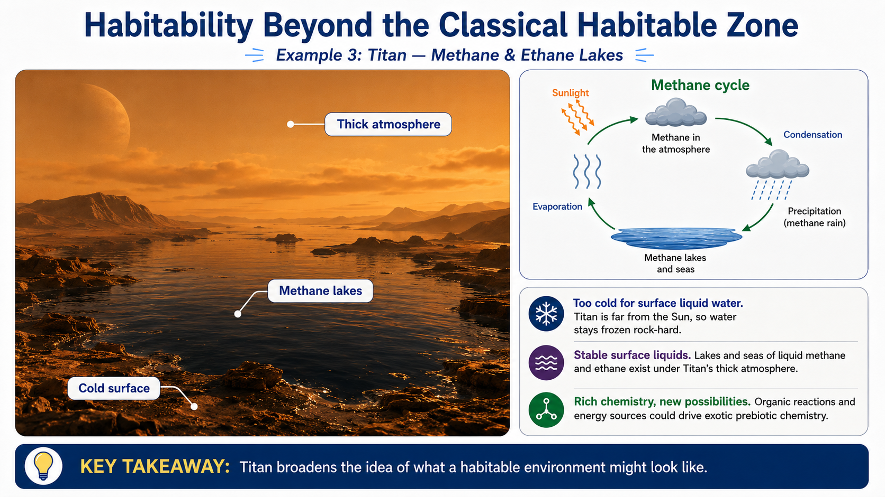
Fig. 9.5 Titan expands the idea of possible habitable environments by showing that a world can have active surface liquids even when water is frozen solid. Its lakes and seas are made of methane and ethane, and its thick atmosphere supports a methane cycle that parallels Earth’s water cycle in some ways. Image credit: Instructor-created course media.#
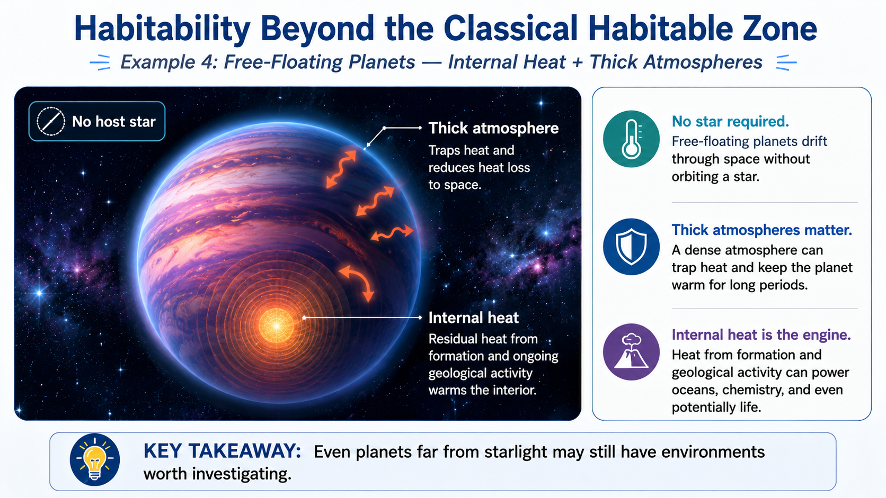
Fig. 9.6 Free-floating planets show the most extreme limit of moving beyond the classical habitable zone concept. Even without a host star, a planet with a thick atmosphere and long-lived internal heat might retain subsurface oceans or other environments worth considering in the broader search for life. Image credit: Instructor-created course media.#
Checkpoint
Classify Mars, Europa, and Titan: which one is a surface-water case, a subsurface-water case, or a different-liquid case?
The practical reason to keep the habitable zone is that science needs search strategies. A future telescope cannot inspect every planet in the Galaxy in the same detail. A mission team needs a way to select targets, estimate orbital periods, predict possible temperatures, and decide which observations are worth the cost. The habitable zone is not a full theory of habitability. It is a useful first filter.
A good way to state the conclusion is this: the habitable zone tells us where surface liquid water is easiest, not where life is guaranteed. That distinction will become more important in the exoplanet chapters. A planet in the habitable zone may be airless, dry, toxic, frozen, or trapped in a runaway greenhouse. A planet outside the habitable zone may have a subsurface ocean or some other protected liquid environment. The value of the habitable zone is that it gives the search a disciplined starting point, not that it ends the search.
Cool Worlds pushes beyond the simple green-ring diagram and treats habitability as a broader astrophysical problem. Focus on why the habitable zone is still valuable even when many possible habitats lie outside it.
9.2. Venus as an Example in Potential Habitability#
Venus is the planet that forces us to be precise. It is close to Earth in size and mass, and it almost certainly formed from broadly similar Solar System materials. Yet its surface today is hot enough to melt lead, its atmosphere is mostly carbon dioxide, its pressure is about 92 times Earth’s surface pressure, and its surface is dry. Venus is not just a slightly warmer Earth. It is a different planetary outcome.
That outcome is especially important because Venus is not an obviously hopeless planet from its basic properties alone. It is almost the same size as Earth, has nearly the same surface gravity, and formed in the same inner Solar System. If we only knew that Venus was a rocky planet near Earth’s size, we might put it high on a list of potentially habitable worlds. The actual Venus teaches the opposite lesson: bulk properties are not enough. The arrangement of atmosphere, water, and rock matters.
The comparison also helps us avoid a common mistake. It is tempting to say that Venus is hot because it is closer to the Sun. That is true in the same way that saying a fire is hot because it gives off heat is true: it points in the right direction but misses the mechanism. Modern Venus is hot because its atmosphere and climate history turned extra sunlight into an extreme greenhouse state. Without that atmosphere, Venus would still be warmer than Earth, but it would not be the planet we see today.
9.2.1. Why sunlight alone does not explain Venus#
Venus orbits at about \(0.72\ {\rm AU}\), which means it is about 28% closer to the Sun than Earth. Because sunlight follows an inverse-square law, Venus receives about \(1/0.72^2\), or about 1.9 times as much solar energy per square meter as Earth does. That difference matters, especially for early Venus when the young Sun was fainter. But it is not enough by itself to explain modern Venus.
If Venus had an Earthlike atmosphere, it would be warmer than Earth, but not nearly as hot as it actually is. Its present extreme temperature comes from the combination of stronger sunlight, an enormous atmosphere, and a greenhouse effect dominated by carbon dioxide. Venus has roughly similar total carbon inventory to Earth if we count carbon locked in Earth’s rocks, but the location of that carbon is totally different. Earth’s carbon is mostly in carbonate rocks and the ocean-atmosphere-rock system. Venus’ carbon is mostly in the atmosphere.
The phrase “carbon inventory” is worth slowing down over. A planet can have a large amount of carbon without having a large amount of carbon dioxide in the air. On Earth, much of the carbon is hidden in rocks, sediments, and the ocean. On Venus, the accessible carbon is overwhelmingly in the atmosphere. The difference is not simply how much carbon the planets received. It is where the carbon ended up after billions of years of atmospheric chemistry, surface reactions, volcanism, and possible water loss.
Another way to see the contrast is to compare the present atmospheres directly. Venus has vastly more carbon dioxide in its atmosphere than Earth does, often summarized as about \(200{,}000 imes\) more atmospheric \( m CO_2\). That number does not mean Venus necessarily formed with \(200{,}000 imes\) more total carbon. It means Earth removed most of its accessible carbon from the atmosphere and stored it in oceans, sediments, and carbonate rocks, while Venus did not maintain the same removal pathway.
Venus’ atmosphere is also not just carbon-rich; it is thick. The surface pressure is about 92 bars, meaning the pressure at Venus’ surface is comparable to being nearly a kilometer underwater on Earth. Because Venus’ surface gravity is lower than Earth’s, that pressure corresponds to an atmosphere with several times the mass of Earth’s atmosphere. A useful plain-language statement is that Venus’ atmosphere is roughly five times thicker by mass than Earth’s atmosphere. That thickness matters because greenhouse warming depends not only on which gases are present, but also on how much infrared-absorbing gas lies above the surface.
Try the numbers
Venus receives about \(1.9\) times Earth’s sunlight because flux scales as \(1/d^2\):
This is a large difference, but it does not by itself explain a surface temperature near \(735\ {\rm K}\). The atmosphere has to be part of the explanation.
# Compare the sunlight received by Venus and Earth using the inverse-square law.
earth_distance_AU = 1.00 # Earth orbital distance from the Sun in astronomical units
venus_distance_AU = 0.72 # Venus orbital distance from the Sun in astronomical units
flux_ratio = (earth_distance_AU / venus_distance_AU)**2 # Venus sunlight divided by Earth sunlight
print(f"Venus receives about {flux_ratio:.1f} times as much sunlight per square meter as Earth.")
Venus receives about 1.9 times as much sunlight per square meter as Earth.
The numerical comparison helps prevent a common oversimplification. Venus is closer to the Sun, and that matters. But the huge difference between Venus and Earth is not simply the 0.72 AU orbit. The difference is that Venus’ atmosphere is massive, dry at the surface, and carbon-dioxide dominated. Venus’ atmosphere is roughly 5 times more massive than Earth’s atmosphere even after accounting for surface gravity differences, and its surface pressure is far higher. A thicker atmosphere has a greater infrared optical depth, meaning it is harder for thermal radiation from the warm lower atmosphere and surface to escape directly to space.
Optical depth is a way of measuring how difficult it is for radiation to pass through a material. A window has low optical depth to visible light because you can see through it. A wall has high optical depth because visible light does not pass through. A greenhouse atmosphere can be mostly transparent to incoming sunlight but optically thick to outgoing infrared radiation. Venus has many absorbing layers above the surface, so infrared light emitted near the ground is very unlikely to escape directly to space.
This does not mean that heat can never leave Venus. Energy must still escape to space, or the planet would warm without limit forever. The important point is where the escaping radiation comes from. On a planet with a thin atmosphere, much of the infrared radiation can come from the surface or lower atmosphere. On a planet with a thick infrared-absorbing atmosphere, the radiation that finally escapes comes from higher, colder layers. Colder layers radiate less energy, so the lower atmosphere and surface must become much hotter to maintain balance with absorbed sunlight.
Checkpoint
Why is “Venus is hot because it is closer to the Sun” an incomplete explanation?
Cool Worlds gives a helpful framing for Venus as a planetary habitability problem rather than treating it only as a simple distance-from-the-Sun problem. Focus on how water loss, atmospheric evolution, volcanic history, and greenhouse warming interact to produce the modern Venus environment.
9.2.2. The two-stream picture of the greenhouse effect#
A basic greenhouse model begins with energy balance. A planet absorbs sunlight and emits infrared radiation back to space. If the absorbed sunlight equals the outgoing infrared radiation, the planet can maintain an approximately steady temperature. If more energy is absorbed than emitted, the planet warms. If more energy is emitted than absorbed, it cools.
The atmosphere matters because visible sunlight and infrared radiation interact differently with gases. Much of the incoming visible sunlight can pass through the atmosphere and warm the surface. The warm surface and lower atmosphere then emit infrared radiation upward. Greenhouse gases absorb some of that infrared radiation and re-emit it in all directions. Some goes upward and eventually escapes to space. Some goes downward and warms the lower atmosphere and surface.
A two-stream model is a simplified way to picture this. Instead of tracking radiation in every direction, we group it into an upward stream and a downward stream. The upward stream carries infrared energy toward space. The downward stream returns some infrared energy toward the surface. If the atmosphere becomes more infrared-opaque, the altitude from which radiation can escape to space moves upward. Since higher layers are usually colder, they emit less energy. To restore energy balance, the lower atmosphere and surface must warm until the escaping radiation again matches absorbed sunlight.
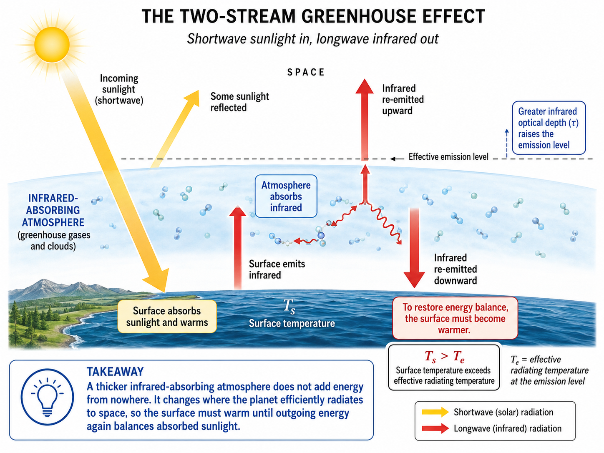
Fig. 9.7 A two-stream greenhouse model reduces infrared radiation to upward and downward flows. The model is simple, but it captures the key point needed here: a thicker infrared-absorbing atmosphere makes it harder for surface heat to escape directly to space, so the surface warms until the planet can again emit enough energy to balance absorbed sunlight. Image credit: Instructor-created course media.#
This is why atmospheric thickness matters. More atmosphere does not automatically mean higher temperature; composition, clouds, altitude structure, and sunlight absorption all matter. But for an atmosphere rich in infrared absorbers like carbon dioxide and water vapor, increasing the amount of absorbing gas generally increases the infrared optical depth. Venus does not merely have “more greenhouse gas” than Earth. It has a much thicker atmosphere whose lower layers are buried beneath many infrared-absorbing layers above.
The two-stream model is deliberately incomplete. It does not include clouds, winds, day-night circulation, the vertical structure of real atmospheres, or the chemistry of sulfuric acid clouds. It is still useful because it explains why atmospheric thickness cannot be ignored. A planet can receive the same sunlight as another planet and still have a very different surface temperature if its atmosphere traps and redistributes infrared energy differently.
This is also why early Venus is not a trivial problem. If early Venus had less carbon dioxide in the atmosphere, more reflective clouds, slower rotation, and enough water to rain out, it might have behaved very differently from modern Venus. But once the atmosphere became hot and water-rich enough, the same water vapor that could have rained out under cooler conditions would instead amplify warming. The distinction between condensation and runaway vapor buildup is central to the Venus-Earth comparison.
Try the numbers
A toy one-layer greenhouse model illustrates why adding infrared opacity warms the surface. Let the planet absorb solar energy corresponding to an effective radiating temperature \(T_e\). If one infrared-absorbing layer returns half of the surface radiation downward, the surface temperature is roughly
This is not a Venus model. It is only a way to see why radiation balance changes when an atmosphere absorbs and re-emits infrared light.
# A toy one-layer greenhouse estimate for how infrared opacity changes surface temperature.
effective_temperature_K = 255 # approximate radiating temperature of Earth in kelvin
surface_temperature_K = (2**0.25) * effective_temperature_K # one-layer greenhouse estimate
print(f"A one-layer greenhouse toy model gives a surface temperature of about {surface_temperature_K:.0f} K.")
print("The point is not the exact number; the point is that infrared opacity raises the surface temperature needed for energy balance.")
A one-layer greenhouse toy model gives a surface temperature of about 303 K.
The point is not the exact number; the point is that infrared opacity raises the surface temperature needed for energy balance.
9.2.3. Carbon, water, and why Venus and Earth diverged#
The biggest habitability lesson from Venus is that geology and atmosphere cannot be separated. Earth and Venus probably received broadly similar ingredients during planet formation, including carbon-bearing material and some water delivered by impacts and outgassing. Yet Earth has abundant surface water and relatively little atmospheric carbon dioxide, while Venus has little accessible water and a massive carbon dioxide atmosphere.
The water contrast is just as extreme as the carbon contrast. Earth has vastly more accessible water than Venus, often summarized as about \(100{,}000 imes\) more water. That does not prove Venus was born dry. Planet formation models and water delivery by icy planetesimals make it reasonable to expect Earth and Venus to have received broadly similar kinds of volatile-rich material. The central question is therefore whether Venus never accumulated much water or whether it once had substantial water and then lost it.
On Earth, the surface became cool enough for water vapor to condense into rain and collect into oceans. Carbon dioxide dissolves in rainwater and seawater, participates in chemical weathering, and becomes locked into carbonate rocks. Plate tectonics and volcanism then help recycle carbon over long timescales. This carbon cycle does not make Earth’s climate perfectly stable, but it provides a stabilizing connection between atmosphere, ocean, and rock.
The stabilizing part is easiest to see during long-term warming. Higher temperature and rainfall can increase chemical weathering, which removes carbon dioxide from the atmosphere and stores it in minerals. Lower atmospheric carbon dioxide weakens greenhouse warming. During long-term cooling, weathering slows while volcanic outgassing can continue adding carbon dioxide. This feedback is not fast enough to prevent short-term climate disruption, and it is not a perfect thermostat. But over millions of years it helps keep Earth from drifting permanently into either a frozen or runaway state.
This feedback requires liquid water. Without rain, rivers, oceans, and wet rock, carbon dioxide cannot be removed from the atmosphere in the same way. That is why water loss and carbon dioxide buildup are linked in the Venus story. Losing water does not merely remove a liquid medium for life. It also damages one of the main climate-regulating pathways that keeps an Earthlike planet from accumulating a massive atmospheric carbon reservoir.
On Venus, the key early question is whether water could condense and remain on the surface long enough to create an ocean-rock-atmosphere carbon cycle. If Venus stayed too warm, then water remained mainly in the atmosphere. Water vapor is itself a strong greenhouse gas, so extra evaporation strengthens warming. Ultraviolet light can break water molecules apart in the upper atmosphere. Hydrogen escapes easily to space, while oxygen reacts with surface rocks or combines with other atmospheric species. Once water is lost, the chance for an Earthlike carbon cycle largely disappears.
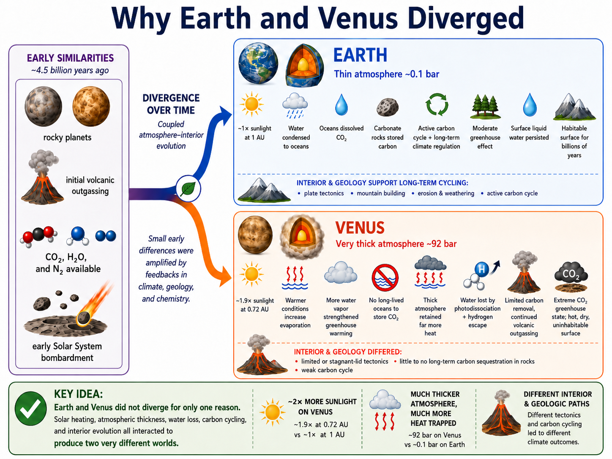
Fig. 9.8 Earth and Venus should not be presented as identical twins separated only by distance from the Sun. The key contrast is system evolution: Earth condensed oceans and buried much carbon in rocks, while Venus lost accessible water, failed to maintain an Earthlike carbon cycle, and retained a massive carbon dioxide atmosphere. Image credit: Instructor-created course media.#
Venus also appears geologically different from Earth. It does not show clear evidence for Earthlike plate tectonics today. Its surface is relatively young compared with many cratered Solar System surfaces, suggesting substantial resurfacing in the past several hundred million years. Venus may lose heat through episodic or stagnant-lid behavior rather than continuous plate recycling. That interior difference matters because the way a planet loses internal heat controls volcanism, crustal recycling, outgassing, and atmospheric chemistry.
This interior difference is one of the most commonly missed parts of the Venus story. The atmosphere and the interior are not separate systems. Volcanism releases gases from the interior. Surface rocks react with atmospheric gases. Crustal recycling can bury or release carbon. A planet with plate tectonics, oceans, and steady weathering can move carbon among atmosphere, ocean, rock, and mantle. A planet with stagnant-lid or episodic resurfacing may store and release gases in a more uneven way. Venus’ atmosphere may therefore be a record of both climate evolution and interior evolution.
The resurfacing problem also affects what we can know. On Earth, old rocks, sediments, zircons, fossils, and isotope ratios let scientists reconstruct pieces of deep history. Venus’ surface is harder to read. Radar images show volcanoes, coronae, deformed terrain, and relatively few impact craters, but the surface has been heavily modified. If early Venus had oceans, the direct surface evidence may have been erased or buried. That does not mean early oceans never existed; it means the evidence is difficult to recover.
Radar mapping is central because visible light cannot see through Venus’ global cloud deck. Those radar maps show a planet with widespread volcanic plains, coronae that resemble large hot-spot or mantle-upwelling structures, and relatively few impact craters. The crater count suggests much of the surface is geologically young compared with ancient heavily cratered terrains, often discussed in terms of a major resurfacing episode within the last several hundred million years, roughly around \(650\ { m Ma}\) in the slide-deck framing. Venus also has sulfuric acid clouds that should be removed on geologic timescales unless sulfur is being replenished, which points toward ongoing or geologically recent volcanic activity.
Checkpoint
How can two planets with similar sizes and starting materials end with different atmospheric carbon reservoirs?
9.2.4. Evidence for water loss on Venus#
A major clue to Venus’ water history comes from deuterium, a heavy isotope of hydrogen. Ordinary hydrogen has one proton. Deuterium has one proton and one neutron, so it is heavier and escapes less easily. If a planet loses a large amount of hydrogen to space, the remaining hydrogen becomes enriched in deuterium. Venus’ atmosphere has a much higher deuterium-to-hydrogen ratio than Earth’s oceans, often summarized as roughly \(100 imes\) Earth’s value, which strongly suggests substantial water loss.
This evidence does not by itself tell us exactly how much water Venus once had. Comet impacts and atmospheric evolution complicate the interpretation. But the basic conclusion is difficult to avoid: Venus has lost significant hydrogen, and water loss is part of its climate history. At minimum, Venus likely lost the equivalent of at least one Earth ocean, and possibly more depending on the assumed starting composition and escape history.
The physical reason is straightforward. Ultraviolet light can break water molecules apart high in an atmosphere. Hydrogen is light, so it can escape more easily than heavier atoms and molecules. Deuterium is heavier than ordinary hydrogen, so it escapes less efficiently. Over time, the remaining atmosphere becomes enriched in deuterium. The measurement is therefore not just a chemical curiosity. It is a clue that the planet’s water inventory has been altered by atmospheric escape.
When hydrogen escapes in large quantities, the process can become hydrodynamic: escaping light gas can flow outward efficiently and can sometimes drag other particles along. Measurements of the deuterium-to-hydrogen ratio suggest that water loss is not just an ancient possibility; hydrogen escape is part of Venus’ atmospheric evolution. Comet impacts complicate the interpretation because they can add deuterium-rich material, so the measured ratio is not a simple ruler for the original ocean depth. Even with that complication, the ratio strongly supports substantial water loss, with at least an Earth-ocean equivalent often treated as a lower limit.
Venus’ slow rotation and weak global magnetic field may have made atmospheric loss easier, but the magnetic-field story should not be oversimplified. Magnetic fields can help reduce some forms of atmospheric stripping, yet atmospheric escape also depends on gravity, upper-atmosphere temperature, chemistry, solar ultraviolet radiation, and interactions with the solar wind. The safest statement is that Venus lost water through a combination of photochemistry and escape processes, with surface reactions helping remove oxygen left behind.

Fig. 9.9 Venus is permanently hidden beneath clouds in visible light. That cloud cover once encouraged speculation about a wet or even tropical surface, but spacecraft measurements revealed an extremely hot, dry surface beneath a massive carbon dioxide atmosphere. The image is useful here because the visible cloud deck hides the dry surface whose history must be inferred indirectly. Image source: Wikimedia Commons, based on NASA imagery; public domain.#
{kind=link}
The Venus story is therefore not “greenhouse gases are bad” in a simple moral sense. Greenhouse warming is necessary for Earth to be habitable. Without greenhouse gases, Earth’s surface would be far below freezing on average. The Venus story is that climate regulation can fail when water, atmosphere, and rock chemistry move into a different feedback regime.
This NASA video is a good place for you to connect atmospheric escape to planetary habitability. Focus on the role of ultraviolet radiation, light gases, and why losing hydrogen is effectively losing water over geologic time.
9.3. Runaway Greenhouse: Model, History, and Misconceptions#
The phrase runaway greenhouse effect is often used loosely. In astrobiology, it has a more specific meaning. A runaway greenhouse occurs when a wet planet absorbs more solar energy than it can lose through thermal infrared radiation while maintaining a stable ocean. Water evaporates, water vapor increases the greenhouse effect, the atmosphere becomes more opaque to infrared radiation, and the surface warms further. If the feedback cannot be stopped by condensation, clouds, or atmospheric circulation, the ocean can be driven into the atmosphere and eventually lost.
The key word is runaway. Ordinary greenhouse warming does not automatically run away. On Earth, warmer air can hold more water vapor, and water vapor strengthens greenhouse warming, but water also condenses into clouds and rain. The water cycle limits how much water vapor remains in much of the atmosphere. A runaway greenhouse is different because the atmosphere becomes hot and moist enough that condensation can no longer keep the feedback under control. The planet crosses from a water-on-the-surface problem into a water-in-the-atmosphere problem.
9.3.1. The origins of the runaway greenhouse idea#
The classical runaway greenhouse model developed from attempts to understand why Venus is so different from Earth and how the inner edge of the habitable zone should be defined. The idea is tied to a radiation limit. As a water-rich atmosphere warms, it contains more water vapor. Since water vapor is an efficient infrared absorber, the atmosphere can become so optically thick that adding more surface heat no longer produces a proportional increase in outgoing infrared radiation. The planet approaches a maximum rate at which it can cool to space.
This is the historical reason Venus matters so much to the habitable-zone idea. The inner edge of the habitable zone is not just “where it gets uncomfortable.” It is where a water-bearing planet can no longer keep surface oceans stable over geologic time. Goody and Walker’s classical discussion framed the problem in terms of how water vapor pressure, temperature, and distance from the Sun affect whether water can remain liquid or whether it is driven into the vapor state. The figure later in this section is a course-level reconstruction of that idea, not a detailed modern Venus climate simulation.
If absorbed sunlight exceeds that cooling limit, a stable ocean cannot persist. Surface water evaporates faster than the planet can radiate the extra energy away. In the simplest one-dimensional models, this creates a threshold between a planet that can maintain surface oceans and a planet that transitions into a steam atmosphere.
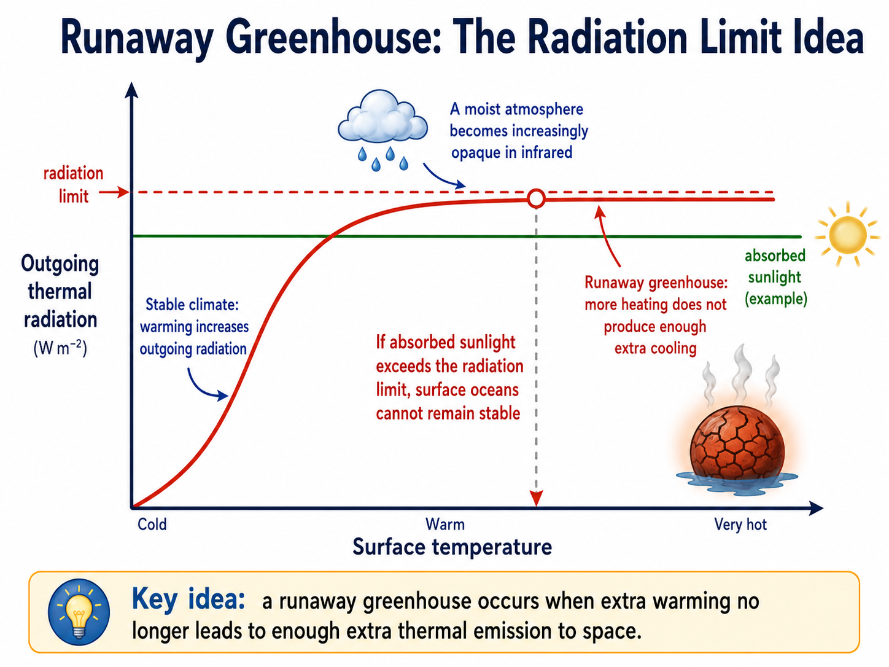
Fig. 9.10 The runaway greenhouse concept depends on a radiation limit. At ordinary temperatures, warming increases outgoing thermal radiation. In a very wet atmosphere, infrared opacity can become so large that outgoing radiation levels off. If absorbed sunlight is above that limit, a surface ocean is no longer stable because the planet cannot radiate energy away fast enough while keeping water condensed. Image credit: Instructor-created course media.#
This simple picture is useful, but it can be misleading if presented as a complete Venus history. Real planets have clouds, atmospheric circulation, day-night contrasts, changing surface chemistry, volcanic outgassing, atmospheric escape, and interior evolution. Venus’ current state likely required coupled evolution of its atmosphere and geology, not just one moment when a thermostat broke.
Checkpoint
In a runaway greenhouse model, why does the ocean make the warming feedback stronger rather than weaker?
9.3.2. Goldblatt et al. (2013) and the hard part of making Earth run away#
Goldblatt et al. (2013), Low simulated radiation limit for runaway greenhouse climates, is important because it sharpened the radiation-limit problem. Their calculations found a thermal radiation limit of about \(282\ {\rm W\ m^{-2}}\) and argued that a steam atmosphere could be a stable state for a planet receiving roughly Earth’s present sunlight. They also emphasized that avoiding a runaway greenhouse on Earth requires the atmosphere to remain subsaturated with water and for the albedo effect of clouds to exceed their greenhouse effect.
The nuance here is that this does not mean ordinary additions of carbon dioxide make Earth become Venus. Goldblatt and colleagues were studying the limiting physics of a hot, water-rich atmosphere. Later discussion of high-carbon-dioxide cases also shows why the problem is not as simple as “add \(\rm CO_2\) until runaway.”
A less jargon-heavy way to say this is that carbon dioxide has two competing effects. It absorbs infrared radiation, which tends to warm the planet. But it also scatters incoming sunlight, especially when the atmosphere becomes very thick, which tends to cool the planet by reflecting more sunlight back to space. In some model cases, adding a great deal of carbon dioxide does not simply push the planet toward a runaway greenhouse. The reflection effect can offset much of the added greenhouse effect. In very high-\(\rm CO_2\) atmospheres, additional \(\rm CO_2\) can increase infrared opacity, but it also increases Rayleigh scattering of sunlight and can raise planetary albedo. Under cases as high as roughly \(1000\times\) modern \(\rm CO_2\), the net radiative effect can still be cooling in the sense that added \(\rm CO_2\) reflects enough sunlight to offset part of its greenhouse warming. The key runaway ingredient is not just carbon dioxide; it is the transition into a hot, moist or steam-rich atmosphere where water vapor dominates the feedback.
That point matters for how we talk about Earth. Earth can be harmed severely by greenhouse warming long before anything resembling a Venus runaway greenhouse occurs. A few degrees of global warming can transform coastlines, heat waves, ecosystems, agriculture, rainfall patterns, and ice sheets. Those are serious climate problems. They are not the same as boiling the oceans. Keeping those two ideas separate makes the science clearer rather than weaker.
Human-caused climate change is real and serious, but the Venus runaway greenhouse is not the expected outcome of burning fossil fuels. Earth’s current climate risk is not that modern industry will turn Earth into Venus. The risk is that rapid greenhouse forcing disrupts the climate system, sea level, ecosystems, agriculture, and human infrastructure. Venus is still relevant, but as a planetary boundary case, not as a direct forecast for the next few centuries.
This Cool Worlds video treats runaway greenhouse physics as a planetary-climate problem rather than a slogan. Focus on the distinction between a radiation limit and ordinary greenhouse warming.
9.3.3. Why Earth did not undergo a runaway greenhouse#
Earth lacked the conditions needed for its greenhouse effect to run away. It received less sunlight than Venus, especially when the young Sun was fainter. Its surface cooled enough for water vapor to condense into rain and form oceans. Once oceans existed, carbon dioxide could dissolve in water and become stored in carbonate rocks. Earth’s atmosphere also did not become permanently steam-rich, so the water-vapor feedback remained limited by condensation.
Clouds and atmospheric circulation matter too. Real Earth is not a saturated one-dimensional column. Dry regions, convection, cloud reflection, and weather patterns all affect how much sunlight is absorbed and how much infrared radiation escapes. Earth’s long-term climate is stabilized by the carbonate-silicate cycle, but that cycle depends on surface liquid water, exposed rock, volcanism, and plate tectonics or at least some form of long-term crustal recycling. Remove the water, and the feedback changes. Remove the recycling, and atmospheric carbon can build up or be lost in different ways.
The deepest lesson is that Earth and Venus are fundamentally different planetary systems today. Venus’ atmosphere is about 5 times more massive than Earth’s atmosphere and produces an infrared optical depth that Earth does not approach. Venus receives about twice Earth’s sunlight. Venus’ interior and resurfacing history also appear different from Earth’s plate-tectonic carbon cycle. These differences are independent of human activity. Human activity is changing Earth’s climate, but it is not changing Earth’s orbit to 0.72 AU, giving Earth a Venus-mass carbon dioxide atmosphere, or removing Earth’s oceans into space.
The better comparison is this: Venus teaches us that atmosphere and geology can push a rocky planet into a radically different stable state. Earth teaches us that oceans, rocks, and climate feedbacks can keep a planet habitable for billions of years, but not that the system is immune to change. Human-caused warming is a major environmental disruption inside Earth’s current climate system. Venus is a warning about planetary feedbacks and boundaries, not a literal near-future forecast.
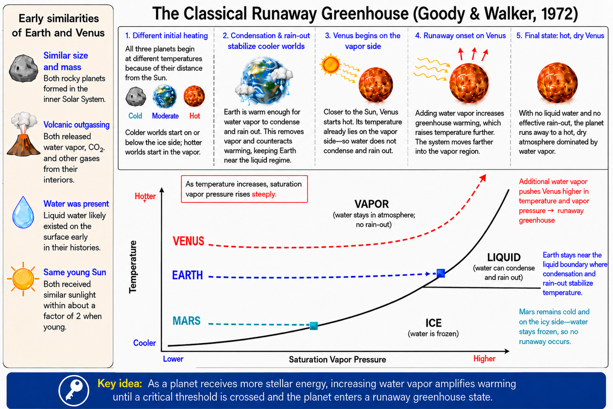
Fig. 9.11 This reconstruction of the classical Goody & Walker framework shows how starting temperature and atmospheric water vapor pressure can send planets down different paths. Mars begins cold on the icy side, Earth remains close enough to the liquid boundary for condensation and rain-out to stabilize water, and Venus begins hot enough that added water vapor pushes the planet farther into the vapor region. Figure recreated from instructor-provided code following the model described by Goody & Walker (1972).#
Checkpoint
Why is it misleading to use Venus as a direct prediction for modern human-caused climate change?
9.3.4. Was early Venus ever habitable?#
Early Venus remains one of the most interesting open questions in comparative planetology. The Sun was about 30% fainter when the Solar System was young. A young Venus at 0.72 AU may have received only slightly more sunlight than modern Earth receives today. If Venus rotated slowly even then, cloud patterns on the dayside might have reflected enough sunlight to allow temperate conditions in some models. Oceans and rain may have been possible.
But the evidence is hard to recover. Venus’ surface appears to have been heavily modified by volcanism and resurfacing, so old rocks that could preserve direct evidence of early oceans are difficult to find or may no longer exist at the surface. This is a major reason future Venus missions matter. They can measure atmospheric composition, noble gases, isotopes, surface mineralogy, and volcanic activity to constrain whether Venus was always dry, briefly wet, or habitable for a substantial time.
The answer matters for exoplanets. If Venus was never habitable, then the inner edge of the habitable zone may be relatively far from the Sun for Earthlike planets. If Venus was habitable for billions of years before losing its water, then some planets near the inner edge might have long habitable windows before they cross a runaway or moist-greenhouse threshold. Either way, Venus is a test case for how habitability evolves, not just where it begins.
This uncertainty is not a failure of science. It is the reason Venus is scientifically valuable. A simple story would be easy: Venus formed dry, stayed dry, and was never habitable. Another simple story would be: Venus was once Earthlike and then became a hothouse. The evidence does not yet force one clean answer. The next generation of Venus measurements is meant to narrow the possibilities by looking for atmospheric, isotopic, surface, and interior clues that still survive.
Focus on what Venus can and cannot tell us about Earthlike planets near the inner edge of the habitable zone.
9.4. Could Venus Have Life Today?#
The surface of Venus is not a plausible habitat for life as we know it. The temperature is far too high for liquid water or stable organic chemistry, and the pressure is crushing by Earth standards. The surface is also chemically hostile and dry. If Venus has any potentially habitable environment today, it would have to be above the surface, in the clouds.
9.4.1. The cloud-life hypothesis#
At altitudes of roughly 50 to 60 km, Venus’ atmosphere has temperatures and pressures that are much closer to Earth surface conditions. That does not make the clouds comfortable. They are dominated by sulfuric acid droplets, contain very little water, and are exposed to a chemically extreme environment. Still, cloud habitability has been discussed because it is the only place on Venus today where temperature and pressure are not immediately disqualifying.
The cloud-life idea became more visible after reports of phosphine in Venus’ atmosphere. Phosphine is interesting because on Earth it can be associated with biological or industrial processes, and it is chemically difficult to maintain in some oxidizing environments without a source. However, the Venus phosphine claim has been heavily debated, and other groups have questioned the detection and interpretation. At this point it is not evidence of life. It is, at most, a disputed atmospheric chemistry puzzle.
That distinction is exactly the standard we have used throughout the course. A possible biosignature is not the same thing as a confirmed biosignature. A gas becomes interesting when it is hard to explain without biology, but the hard part is proving that non-biological explanations are inadequate. For Venus, the clouds are chemically complex, observations are difficult, and the signal has been debated. The scientifically useful response is not to dismiss the idea, and not to declare life. The useful response is to ask what measurements would settle the chemistry.
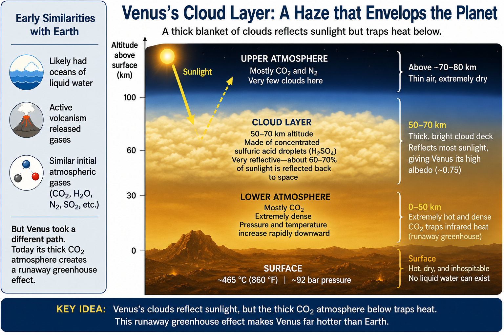
Fig. 9.12 The reason cloud habitability is even discussed for Venus is that only the middle cloud layer has temperature and pressure values that overlap familiar Earth-surface conditions. That does not make it an inviting habitat: the clouds are acidic, dry, and chemically extreme. Image credit: Instructor-created course media.#
Future Venus missions are the right way forward, but the mission names should be handled carefully because schedules and program details can change. NASA currently describes DAVINCI and VERITAS as separate, complementary Venus missions. DAVINCI is a flyby and atmospheric-probe mission that will measure Venus’ atmosphere directly during descent, including gases and isotopes that preserve clues to atmospheric history. VERITAS is a planned orbiter that will use radar and infrared observations to map the surface and investigate Venus’ geologic evolution. Together, they address the same larger question from different directions: how did Venus’ interior, surface, atmosphere, and water history become so different from Earth’s?
As of the current NASA mission pages, DAVINCI is listed as a future Venus flyby and atmospheric-probe mission with a tentative 2030 launch, while VERITAS is listed as a future Venus orbiter with launch no earlier than 2031. They are not described by NASA as a single combined mission. The important course-level point is that the two mission types answer different questions. A descent probe can sample the atmosphere directly and trace chemical history during its fall. An orbiter can map the surface and search for signs of tectonics, volcanism, and crustal evolution across the planet.
Focus on the measurements a descent probe can make that an orbiter cannot: atmospheric composition, isotope ratios, pressure, temperature, winds, and images below the clouds.
Checkpoint
Why would a disputed gas detection in Venus clouds not count as confirmed life?
Focus on why a possible biosignature gas requires independent confirmation, chemical context, and non-biological alternatives before anyone should claim life.
9.5. Surface Habitability Factors and the Habitable Zone#
The Venus comparison shows why surface habitability depends on more than orbital distance. A planet must receive a useful amount of stellar energy, but it must also retain an atmosphere, regulate climate, maintain a liquid medium, and avoid losing essential volatiles to space or rocks in a way that removes habitability.
9.5.1. Three first-order factors#
There are three major factors: proximity to the central star, planetary size, and atmosphere. These factors should not be treated as three isolated boxes.
Distance controls the energy arriving from the star.
Planetary size controls gravity, cooling rate, and the ability to retain internal heat and an atmosphere.
Atmosphere controls pressure, greenhouse warming, radiation shielding, and volatile transport.
Change one factor and the others respond. A planet close to its star may need a reflective atmosphere to avoid overheating. A small planet may need unusual protection or replenishment to keep its atmosphere. A planet with a thick atmosphere may remain warm farther from its star than a bare rock could.
Distance from the star controls the energy supply. Too close, and a planet risks water loss through moist or runaway greenhouse pathways. Too far, and a planet risks freezing unless greenhouse gases or internal heat compensate. But the same distance can have different consequences around different stars because luminosity and spectrum vary.
Distance also interacts with atmospheric composition. If a planet moves too close to the star, higher temperature increases evaporation, which increases atmospheric water vapor, which strengthens greenhouse warming. If a planet moves too far out, carbon dioxide can help warm the surface, but only up to a point. At large distances, carbon dioxide can condense or scatter enough sunlight that simply adding more does not solve the freezing problem. The habitable-zone boundaries are therefore climate thresholds, not painted lines in space.
Planetary size controls how easily a world keeps internal heat and holds onto an atmosphere. Small worlds cool faster, lose geological activity sooner, and have weaker gravity. Mars is the course example: it was large enough for early volcanism and water, but too small to maintain long-term atmosphere and magnetic protection. Larger terrestrial planets may retain heat longer, but size alone is not enough. Venus is large enough, yet it lacks Earthlike surface habitability.
The Moon and Mercury show the small-world end of the problem. Both are too small to hold thick atmospheres for long periods, and neither has active surface environments comparable to Earth. Mars sits between those extremes and Earth. It had enough mass to build volcanoes, outgas an atmosphere, and host liquid water in the past, but it cooled and lost much of its atmospheric protection. Venus sits near Earth in size and gravity, so its failure to remain surface habitable cannot be blamed on being too small. That contrast is why planetary size is necessary but not sufficient.
Size may also affect plate tectonics. A planet needs internal heat to drive convection and lithospheric stress, but it also needs a lithosphere that can fracture and recycle. Mars appears to have cooled too much and too quickly to sustain Earthlike plate tectonics. Venus is the next best candidate by size, yet it does not show clear evidence for modern Earthlike plate tectonics either. That means plate tectonics is not guaranteed simply because a planet is rocky and near Earth size.
Atmosphere controls pressure, greenhouse warming, radiation shielding, and volatile transport. Without enough pressure, liquid water boils or sublimates. With too much infrared opacity, surface temperatures can become extreme. With the wrong chemistry, water can be lost or carbon can remain in the atmosphere. A moderate atmosphere is therefore not just “some air.” It is a coupled climate system.
Atmospheric pressure is especially important for water. With too little pressure, water can boil or sublimate even at temperatures where liquid water might otherwise seem possible. This is why Mars has no stable lakes or puddles today even though ice is abundant. With too much atmosphere, especially one rich in infrared absorbers, the surface can become too hot. Venus shows the high-pressure failure mode. Mars shows the low-pressure failure mode. Earth sits between them, but not by accident; its atmosphere is tied to oceans, rocks, life, and long-term cycling.
Atmospheres also block radiation. Ozone in Earth’s upper atmosphere absorbs much of the Sun’s ultraviolet radiation. A thicker atmosphere can shield a surface from some high-energy particles. Without such shielding, life might still exist underground or underwater, but it becomes much harder to detect remotely. A telescope looking at an exoplanet is most likely to detect atmospheric gases or surface-related signatures. If life is hidden below rock or ice, it may be real and still nearly invisible from interstellar distance.
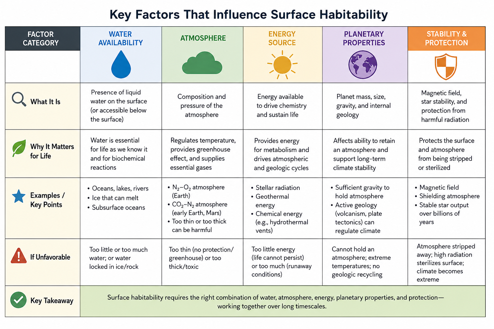
Fig. 9.13 Surface habitability depends on coupled factors. Distance from the star is only the beginning. Planet size, atmosphere, geology, formation history, volatile delivery, and atmospheric protection determine whether liquid water can actually persist. Image credit: Instructor-created course media.#
Checkpoint
Choose one factor besides distance from the star and explain how it could make a planet inside the habitable zone uninhabitable.
9.5.2. Geology, climate regulation, and atmosphere retention#
A planet’s geological activity affects habitability because rocks and gases exchange material. Volcanism releases gases from the interior. Weathering removes carbon dioxide from the atmosphere. Subduction or other recycling processes can return carbon to the interior. Magnetic fields may help reduce some forms of atmospheric loss, although gravity, upper-atmosphere chemistry, and stellar radiation also matter.
The magnetic-field point is often stated too strongly. A magnetic field is useful because it can deflect charged particles from the solar wind, reducing direct atmospheric stripping in some cases. But it is not the only protection a planet has, and it is not always enough by itself. Venus lacks a strong Earthlike global magnetic field and still has a massive atmosphere. Mars lacks a strong global field and lost much of its atmosphere. The difference involves gravity, atmospheric mass, chemistry, volcanic replenishment, solar radiation, and time. A magnetic field is part of the story, not a one-word answer.
Formation environment matters because a planet does not choose its inventory after the fact. Water and carbon are delivered and redistributed during planet formation, impacts, outgassing, and chemical evolution. Too little outgassing can leave a planet airless. Too little delivery of icy planetesimals can leave it dry. Too many large impacts can remove atmosphere, melt crust, or reset surface environments. Mars may have suffered from a combination of small size, atmospheric loss, and impact history. Venus may have retained too much carbon dioxide in the atmosphere after losing accessible water. Earth landed in a more favorable range, but that does not mean the outcome was automatic.
Earth’s long-term habitability depends on these connections. If Earth had no water, weathering would be very different. If Earth had no volcanism, atmospheric carbon would not be replenished. If Earth had no climate regulation, the planet could become trapped in a snowball or hothouse state. The carbon cycle is not a magic thermostat, but it is a powerful stabilizing feedback over geologic time.
Venus probably followed a different interior-atmosphere path. A stagnant or episodic lid can allow heat and volatiles to build up and release differently than plate tectonics does. Large resurfacing episodes can bury old evidence and release gases. The current Venus atmosphere may therefore be partly a record of how its interior cooled and released volatiles, not merely a record of its distance from the Sun.
The summary is that surface habitability requires balance. A planet must be close enough to receive useful stellar energy but not so close that water is lost. It must be massive enough to retain an atmosphere and internal heat but not so massive that it becomes a mini-Neptune with a deep hydrogen envelope. It needs enough atmosphere for pressure and warming but not so much greenhouse opacity that the surface becomes hostile. It needs volatile delivery but not repeated sterilizing impacts. It may need magnetic protection or other atmospheric-loss defenses over long timescales. Every item in that list can change over time.
Focus on the idea that habitability is maintained by interacting systems, not by one number like orbital distance.
9.6. Boundaries of the Sun’s Habitable Zone Today#
The inner and outer edges of the Sun’s habitable zone are not single observed facts. They are model results. Different assumptions about clouds, atmospheric composition, surface pressure, rotation, and planetary mass lead to different boundaries.
For that reason, habitable-zone boundaries are usually given as ranges rather than exact values. A model can ask where an Earthlike planet would enter a runaway greenhouse, where it would lose water slowly through a moist greenhouse, where carbon dioxide clouds or scattering begin to limit warming, or where empirical Solar System examples suggest past water was possible. These are related questions, but they are not identical questions.
The inner edge is especially sensitive because water vapor is a greenhouse gas and because clouds can either cool or warm depending on their height, thickness, and distribution. A rapidly rotating planet, a slowly rotating planet, and a tidally locked planet can have different cloud patterns. A planet with continents arranged differently from Earth can have different weathering and circulation. Even the same orbit can give different answers when the atmosphere is allowed to respond in different ways.
A conservative inner edge is usually tied to water loss: either a moist greenhouse, where the upper atmosphere becomes wet enough for water to escape over time, or a runaway greenhouse, where oceans become unstable. The outer edge is usually tied to the ability of carbon dioxide to keep a planet warm. Farther from the Sun, a planet would need more greenhouse warming. But beyond some point, adding carbon dioxide no longer helps enough because \(\rm CO_2\) can condense and because increased scattering reflects sunlight.
The slide-deck numbers are useful anchors. A runaway greenhouse boundary for an Earthlike planet around the Sun is often placed near \(0.84\ {\rm AU}\) in optimistic inner-edge estimates. A moist greenhouse boundary, where water can be lost gradually over long times, is often placed farther out, near \(0.95\ {\rm AU}\). These values should not be memorized as fixed truths. They are model-dependent markers that show the difference between rapid ocean instability and slower water loss.
The outer edge has the same problem in reverse. A colder planet can be warmed by adding carbon dioxide, but only within limits. A conservative outer edge is often near \(1.4\ {\rm AU}\), while more optimistic estimates can extend toward \(1.7\ {\rm AU}\). Mars lies at \(1.52\ {\rm AU}\), which is why early Mars remains so important. It had evidence of liquid water, but not necessarily because it sat comfortably inside a stable Earthlike habitable zone. It may have had a thicker atmosphere, additional greenhouse gases, intermittent warming, impacts, volcanism, or subsurface environments.
Empirical boundaries use Venus and Mars as guideposts. Venus is not habitable today, but early Venus may or may not have been habitable. Mars is not surface-habitable today, but early Mars clearly had liquid water in some environments. These worlds provide real Solar System constraints, but they are not clean laboratory experiments. They each have their own histories.
This produces three useful categories. An optimistic estimate asks how wide the zone could be under favorable assumptions, roughly \(0.84\) to \(1.7\ {\rm AU}\) for the Sun in the numbers used here. A conservative estimate asks where long-term surface liquid water is more defensible under stricter assumptions, roughly \(0.95\) to \(1.4\ {\rm AU}\). An empirical estimate uses the Solar System guideposts of Earth, Venus, and Mars, roughly \(1.0\) to \(1.52\ {\rm AU}\) if one emphasizes Earth and early Mars. None of these is “the correct answer” by itself.
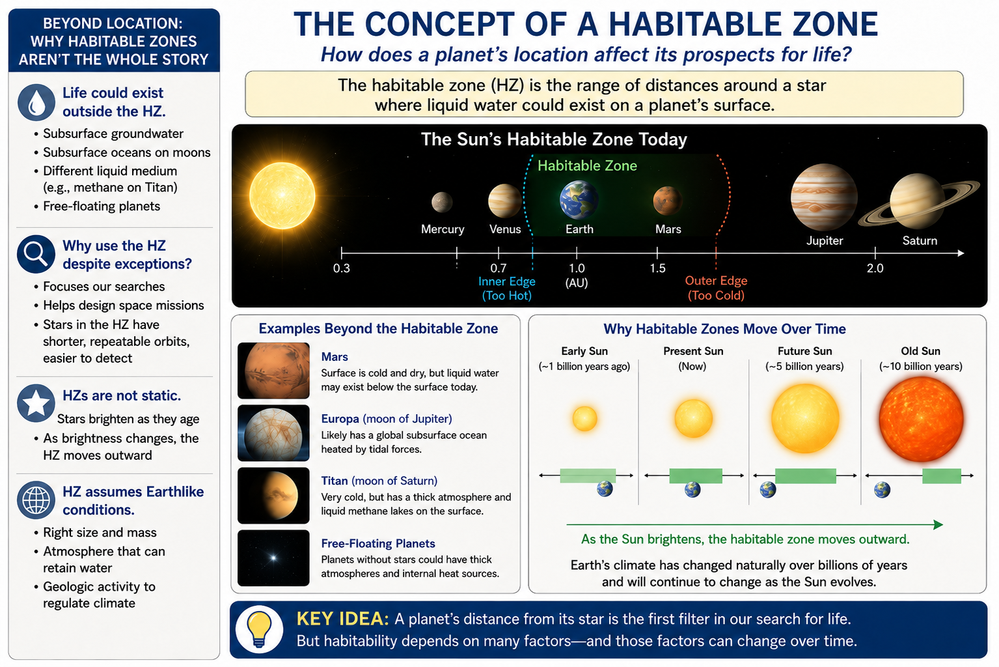
Fig. 9.14 The optimistic and conservative habitable-zone estimates are useful search tools, while Venus, Earth, and Mars remind us that real planets still require atmosphere, water, and geologic context. The boundaries are estimates, not sharp walls in space. Image credit: Instructor-created course media.#
The key habitability conclusion is that the inner edge of the habitable zone must lie somewhere between modern Earth and Venus for Earthlike planets around the Sun. Earth has maintained surface oceans for billions of years. Venus has not. The exact boundary depends on the model and on the planet’s history. That uncertainty is not a weakness; it is the point of comparative planetology.
For mission design, approximate boundaries are still valuable. A telescope team deciding which exoplanets deserve deeper atmospheric observations needs a way to rank targets. A planet in the conservative habitable zone around a quiet star is a stronger first target than a planet far inside the runaway limit. But the ranking is only the beginning. Once a candidate is found, the next questions become atmospheric: Does it have air? Does the atmosphere contain water vapor, carbon dioxide, methane, oxygen, or other gases? Is the planet more like Earth, Venus, Mars, Titan, or something we have not yet seen?
Checkpoint
Why do Venus and Mars help define empirical habitable-zone boundaries even though neither planet is surface-habitable today?
Try the numbers
The young Sun was fainter. If the Sun was about 70% as bright as today, then early Venus received roughly
times modern Earth’s sunlight. Early Venus was still more strongly irradiated than Earth, but not by as much as modern Venus is today. That is why early Venus habitability remains a real scientific question.
9.6.1. The continuously habitable zone#
The habitable zone changes as the Sun changes. This is where a common mistake appears: the habitable zone is not one fixed ring drawn around the Sun forever. The Sun was fainter in the past, so the region where surface liquid water was easiest to maintain was closer to the Sun. As the Sun brightens, that region slowly shifts outward.
In this course, the continuously habitable zone (CHZ) means the region where liquid water has been possible over the last \(4.5\ {\rm Ga}\). The phrase does not mean that a planet definitely had water for all that time. It also does not mean life was present. It means that, according to a chosen habitability model, an Earthlike planet at that distance could have remained within the surface-liquid-water zone across the age of the Solar System.
The CHZ is therefore an overlap region. Imagine drawing the Sun’s habitable zone when the Solar System was young, then drawing it again today. The CHZ is the part that stays inside the habitable zone across the whole time interval being considered. A planet can be in the habitable zone today but not in the CHZ if it would have been too cold earlier. A planet can also have been in the CHZ for the past \(4.5\ {\rm Ga}\) and still be uninhabited if it lacked water, the right atmosphere, geological recycling, or the chemical conditions needed for life.
The CHZ is easiest to misunderstand if it is treated as a place where life must have existed continuously. That is not what the term means in this course. It is a climate-possibility definition. It asks whether a planet at a given distance could have had surface liquid water during the last \(4.5\ {\rm Ga}\) as the Sun brightened. A sterile planet could still lie in the CHZ. A planet with subsurface life could lie outside the CHZ. A planet could also lie in the CHZ and lose habitability because of atmospheric escape, giant impacts, or a failed carbon cycle.
Earth is special in this discussion because it appears to have remained within the surface-water range for most of Solar System history. Venus probably sat too close to the inner edge for long-term surface water under many assumptions. Mars may have been more favorable earlier, but as the Sun brightened the habitable zone shifted outward while Mars also lost atmosphere and cooled internally. The CHZ combines stellar evolution with planetary climate, but it still does not replace the geology.
Checkpoint
In this course, why does the CHZ mean “possible liquid water over the last \(4.5\ {\rm Ga}\)” rather than “life has existed there continuously”?
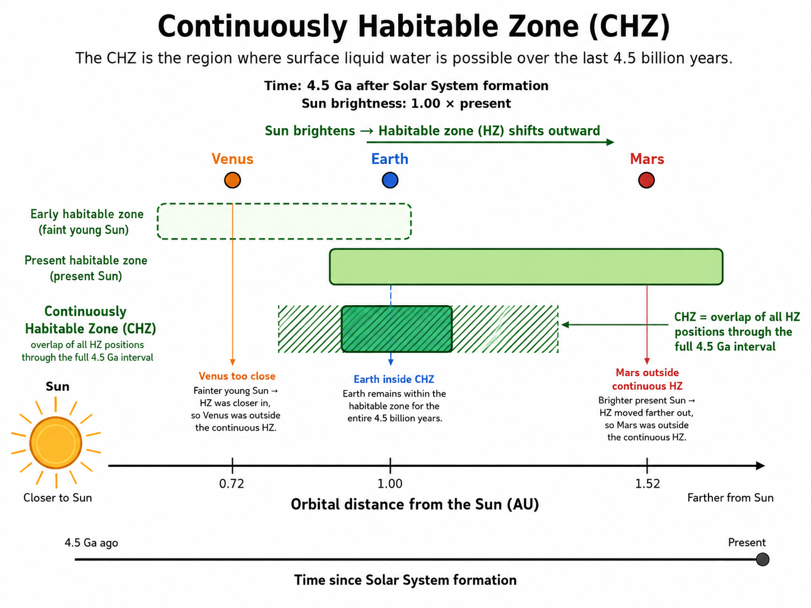
Fig. 9.15 A planet can lie in the habitable zone today and still fall outside the continuously habitable zone if it was too hot or too cold earlier in Solar System history. In this course, the CHZ is the region where surface liquid water was possible over the last \(4.5\ {\rm Ga}\), not a claim that life existed there continuously. Image credit: Instructor-created course media.#
# Estimate early Venus sunlight relative to modern Earth.
modern_venus_flux_earth_units = 1.9 # modern Venus sunlight relative to modern Earth
faint_young_sun_factor = 0.70 # approximate young Sun luminosity relative to today
early_venus_flux = modern_venus_flux_earth_units * faint_young_sun_factor
print(f"With a 70% young Sun, early Venus received about {early_venus_flux:.1f} times modern Earth's sunlight.")
print("That is still high, but it leaves room for model-dependent early Venus climate histories.")
With a 70% young Sun, early Venus received about 1.3 times modern Earth's sunlight.
That is still high, but it leaves room for model-dependent early Venus climate histories.
9.7. The Future of Life on Earth#
The habitable zone is not fixed because the Sun is not fixed. Main-sequence stars brighten slowly as they age. The Sun has brightened since Earth formed and will continue to brighten. Over hundreds of millions to billions of years, that gradual increase matters for Earth’s climate.
The reason is built into how the Sun produces energy. Hydrogen fusion in the core converts hydrogen into helium. As helium accumulates, the core structure changes, and the Sun slowly becomes more luminous. This change is tiny on human timescales but enormous over geologic time. Life has never experienced one fixed Sun. It has evolved on a planet orbiting a star that has been gradually brightening for billions of years.
This history is part of why Earth is impressive. Early Earth received less sunlight than modern Earth, yet geological evidence suggests liquid water was present very early. That means the atmosphere, greenhouse gases, clouds, oceans, and geology had to compensate for a fainter young Sun. In the future, the problem reverses. The Sun will supply more energy than the current Earth system can handle while maintaining the same kind of surface biosphere.
As solar luminosity rises, weathering feedbacks can draw down atmospheric carbon dioxide. That can help stabilize temperature for a time. But plants need carbon dioxide, and climate regulation has limits. Eventually, higher sunlight increases evaporation, raises water vapor in the atmosphere, and increases the risk of water loss. Long before the Sun becomes a red giant, Earth’s surface will become increasingly hostile to complex life.
A rough course-level timeline is that Earth’s surface habitability may have only about a billion years left for many familiar forms of life. Some models place Earth’s exit from the continuously habitable zone around \(1.5\ {\rm Gyr}\) from now if the atmosphere does not change in a way that substantially increases reflectivity. These numbers are uncertain, but the direction is robust: the inner edge of the habitable zone moves outward as the Sun brightens, and Earth’s orbit stays near \(1\ {\rm AU}\).
The first major stress is not the red giant phase. It is increasing sunlight during the Sun’s remaining main-sequence lifetime. More sunlight increases evaporation. More evaporation puts more water vapor into the atmosphere. More water vapor strengthens greenhouse warming and can make the upper atmosphere wetter. If enough water reaches high altitudes, ultraviolet radiation can break water molecules apart, hydrogen can escape, and the planet can begin losing water over long timescales. This is the moist greenhouse pathway.
The timeline is uncertain because it depends on clouds, atmospheric circulation, biology, carbon cycling, and how Earth’s interior evolves. But the broad direction is not uncertain: the Sun’s increasing luminosity will eventually move Earth’s surface outside the conditions that support the biosphere we know. Microbial life may persist longer than plants and animals, just as microbes dominated most of Earth’s past.
This is the same idea behind the CHZ, but projected forward. A planet’s position must be evaluated over time, not just at one instant. Earth has remained within the Sun’s surface-water zone for roughly the age of the Solar System, but that will not remain true indefinitely. The future inner edge of the habitable zone will eventually move outward past Earth’s orbit, meaning that Earth can be historically habitable and still have a finite habitable lifetime.
There are uncertainties because feedbacks can delay or accelerate change. Clouds could become more reflective. Weathering could draw down carbon dioxide. Biological activity could alter atmospheric composition. But feedbacks have limits. If carbon dioxide becomes too low, many plants struggle because photosynthesis requires carbon dioxide. If evaporation becomes too strong, water vapor itself becomes the dominant greenhouse problem. Long-term habitability is therefore not simply about keeping temperature comfortable today; it is about whether stabilizing feedbacks can keep working while the star changes.
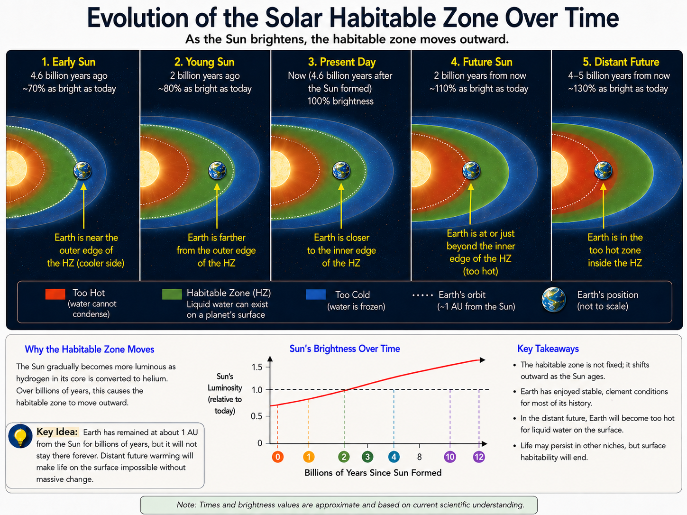
Fig. 9.16 The Sun changes over time, so the habitable zone changes too. Earth’s orbit remains near \(1\ { m AU}\), but the habitable-zone boundaries shift outward as the Sun brightens. Earth has enjoyed a long habitable window, but the future inner edge will eventually move outward past Earth’s orbit. Image credit: Instructor-created course media.#
This future habitability problem also reframes the search for life elsewhere. A planet can be habitable for a limited window. A world may be too young, temporarily habitable, long-term stable, or past its habitable era. When we observe an exoplanet, we see it at one moment in its history. The deeper question is evolutionary: how long can the planet maintain the coupled conditions needed for life to arise, survive, and possibly become detectable?
After the main-sequence habitability problem comes the red giant future. Eventually the Sun will expand enormously as it exhausts hydrogen in its core and changes the location of fusion. The inner Solar System will be transformed. The details of Earth’s final fate are complex, but the surface biosphere will be long gone by then. After the red giant phase, the Sun will shed its outer layers into space, producing a planetary nebula, and the remaining core will become a white dwarf made mostly of carbon and oxygen. A white dwarf does not shine by ongoing fusion in the same way the Sun does today. It slowly cools.
On fantastically long timescales, a white dwarf would continue fading. The idea of a black dwarf is the endpoint: a white dwarf that has cooled so much that it emits essentially no light. The universe is not old enough for black dwarfs to exist yet, but the concept helps set the scale. Habitability around stars is temporary because stars evolve. Some stars last much longer than the Sun, but no ordinary star remains unchanged forever.
Could intelligent life survive by moving? Perhaps in principle, but the problem becomes harder as timescales grow. A future civilization could move habitats outward in the Solar System, attempt to settle Mars or icy moons, or travel to another star. The nearest star systems, Proxima Centauri and Alpha Centauri, formed at roughly similar cosmic times to the Sun. Proxima is much less massive, so it will remain on the main sequence far longer, but Proxima b would be a very different environment from Earth. Moving to another world is not the same as finding a second Earth.
In the far future, even star-hopping runs into limits because stars themselves age. Some speculative ideas imagine planets or habitats warmed by accretion disks around black holes, but those would be exotic and temporary energy sources, not ordinary habitable zones like the Sun’s. On the largest timescales, the universe trends toward heat death: usable energy becomes harder to extract as systems approach thermal equilibrium. That is far beyond the practical scope of astrobiology, but it reinforces the same lesson. Habitability is always tied to energy flow, and energy flow changes with time.
Checkpoint
Why is a planet’s habitable lifetime more important than whether it lies in the habitable zone at one instant?
This video is useful near the end because it connects stellar evolution to the future of Earth’s biosphere. Focus on the difference between human timescales, biological timescales, and stellar timescales.
9.8. Before moving on#
Check your understanding
Before continuing, make sure you can answer these questions in your own words:
Why is the habitable zone useful even though Mars, Europa, Titan, and free-floating planets show that habitability can exist outside the classical surface-water zone?
Why does Venus require a coupled atmosphere-geology explanation rather than a simple closer-to-the-Sun explanation?
What does the two-stream greenhouse model show about atmospheric thickness and infrared optical depth?
Why does Goldblatt et al. (2013) sharpen the runaway greenhouse problem without implying that modern Earth is on track to become Venus?
What evidence suggests that Venus lost substantial water, and why does that matter for carbon cycling?
Why does Earth’s ocean-rock-atmosphere carbon cycle help prevent the kind of runaway pathway associated with Venus?
How do planetary size, interior evolution, atmosphere, and magnetic protection affect long-term surface habitability?
What does the CHZ mean in this course, and why is it not the same as saying that life existed continuously?
Why should habitable never be used as a synonym for inhabited?
How does the Sun’s future evolution show that even a successful habitable planet can have a limited surface-habitability lifetime?
These questions are not a summary of the chapter. They are a check on whether the main ideas are connected in your mind.